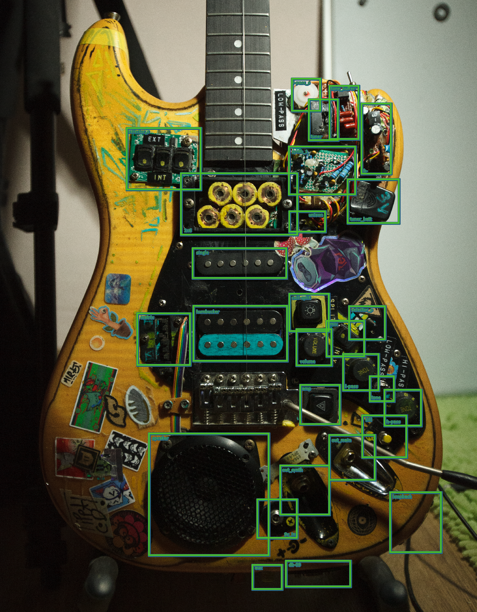
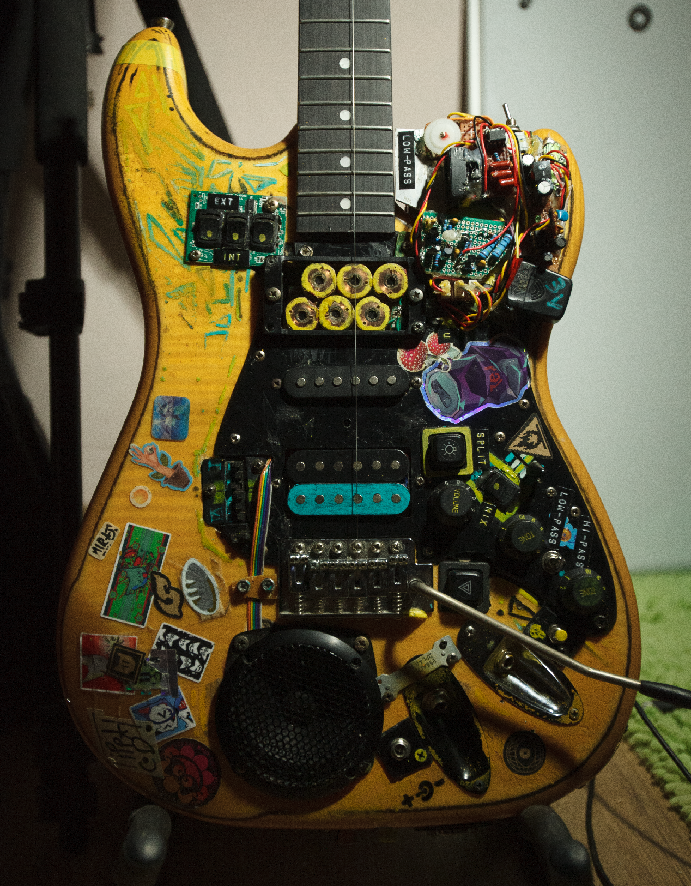
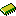
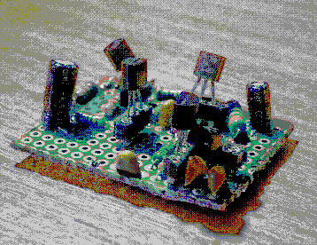
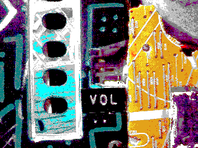

recomended horizontal resolution is 1920px at 100% zoom.
higher or lower resolution may result in windows not displaying in their propper places/text looking blurry.
hold [Shift] to show info.
hold [Ctrl] + [Alt] to hide boxes.
hold [X] to show debug texture.
selector_s
1x6
l-pass_s
tuner
tone_buffer
b-
synth_1
tuner_batt
single
humbucker
coil-split
unison
synth_2
matrix
toggle_s2
selector_p
volume
mix
l-pass
h-pass
switch_power
tone
speaker
kill
amp
out_main
out_synth
9v_in
loopback
db-09
aux



String selector
Switches for selecting strings,
in groups of two(6/5,4/3,2/1),
going to the switch matrix[INT]
or db-09 connector[EXT].
1x6 pickup
6 single string pickups
fitted into a roughly 1
humbucker space.
Synth low-pass
Low-pass control for
synth buffer/tone circuit.
Synth tone/buffer
Buffer and tone for
combined synth output.
Tuner
Tuner, taken apart
and infused into the
electronics module.
B-
Negative 3 volt
power supply.
Very ineffective,
but works.
Synth 1
My original layout of
the shocktave pedal.
"if it works, leave it"
Tuner battery
My original layout of
the shocktave pedal.
"if it works, leave it"
Singlecoil
Just a standard
singlecoil pickup.
Humbucker
A humbucker pickup
with a cut wire to
allow for coil splitting
Coil-split switch
Switch to turn
humbucker coilsplit
on or off
Unison switch
A tiny switch, that
feeds synth 2 the
same string as synth 1.
Synth 2

Second synth, hidding under the pickguard.
My new layout of the shocktave pedal.
Trivia: harvested of a different project.
Switch matrix
6 switches that decide
where strings going
from [INT] of selector_s.
(up - synth_1, down - synth_2)
Toggle synth 2
A switch to send strings
into the synth 2, effectively
turns synth 2 on/off
Pickup selector
A standard 5 way
pickup selector. With
no neck pickup last
position acts like mute.
Guitar volume
Volume potentiometer,
unchanged and origianl.
Mix switch
Switches guitar signal
and combined synth
signal into a mixer,
which outputs the
result to out_main.
Guitar low-pass
Kinda weak low-pass filter,
default capacitor is not
really enough, but oh well.
Guitar high-pass
Very strong high-pass filter,
kinda just picked random
capacitor, so i guess if
it works it works.
Power switch
Main power switch for:
- synth_1
- synth_2
- b-
- tone_buffer
- mix(mixer)
Tone switch
Engages the tone stack
(l-pass and h-pass)
before sending guitar
signal to volume.
Speaker
Speaker for the amplifier,
gets pretty loud. sounds like
shit tho.
Kill switch
Cuts signal to out_main
Amplifier
This is really only a button to turn on
the amplifier, but im not coding in the
back side of the guitar lmao;
All there is anyway for it is
a volume control.
Amp it self is some kind of cheap
module i ordered from somewhere.

Main output
Well yea.
Main output.
Synth output
Deafult output for
combined synth output.
9 volts input
Center positive,
the way it should be.
Effect loopback
Connect your effect pedals
in to out_main, and effects
out to here, and BOOM!
Effect applied to
amplifiers input.
[EXT] module connector
A db-09 connector for external modules
(right now there is no external modules)
it caries all 6 strings, ground,
return signal from the module,
and one pin is not connected.
AUX jack
Regular stereo(L and R wires together)
aux jack, there is a switch that switches
amp output from speaker to this jack.
(potentialy volume warning)